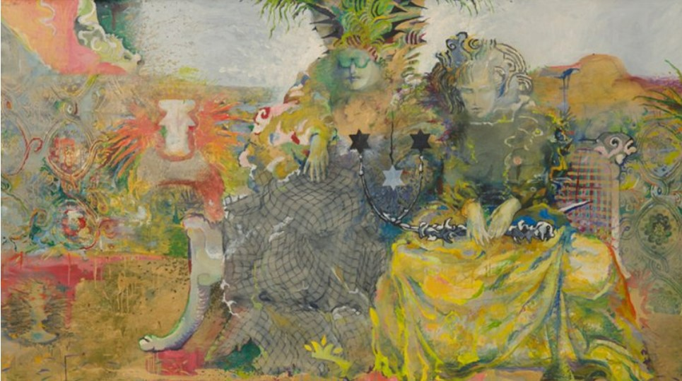
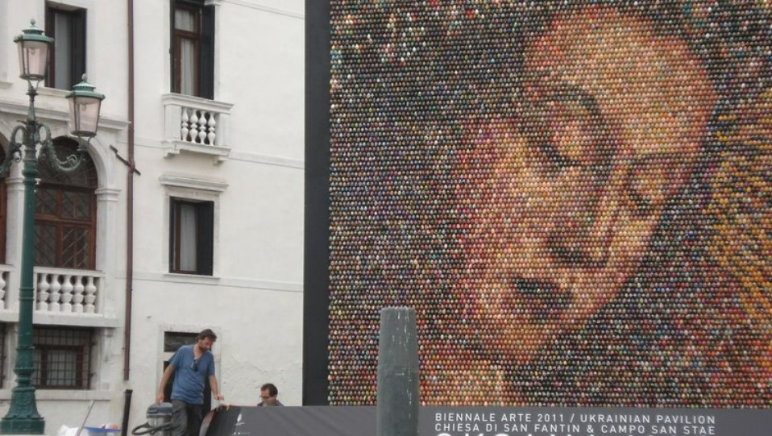
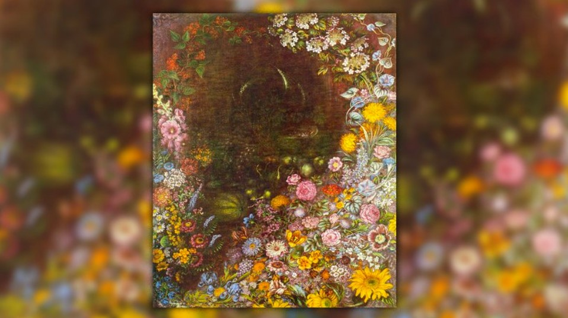

Ілля Чичкан

Епатажний український художник, чиї роботи виставлялися у Музеї сучасного мистецтва у Нью-Йорку, а також у галереях та музеях Європи, Південної та Північної Америки. Найдорожчу картину Чичкана "ІТ" ("Воно") продали на аукціоні Philips de Pury за $70 тис.У 1990-х роках його ім'я було пов'язане з рухом митців під назвою "Нова Хвиля" – локальним українським проявом мистецтва трансавангарду (це один із напрямків у мистецтві раннього постмодернізму), який з'явився як реакція на ключові соціально-політично-культурні зміни, що настали з початком реформ "перебудови" 1985-1991 років. Працює в різних жанрах: живопис, фотографія, інсталяція, відео.Роботи художника виставлялися у провідних галереях та музеях Європи, США та Південної Америки, а також брали участь у престижних міжнародних форумах та фестивалях сучасного мистецтва – бієнале у Сан-Паулу (1996), бієнале сучасного мистецтва в Йоганнесбурзі (1997), Празькій бієнале (2003), Белградській бієнале (2004), європейській бієнале Manifesta (2004), а також Венеційській бієнале (2009).".
Катерина Білокур

Важко знайти випадок в історії мистецтва, коли бажання стати художником зустрічає стільки труднощів, скільки довелося подолати Катерині Білокур. Мрія дівчини із простої селянської родини здійснилася не завдяки, а всупереч долі. Майже все життя їй довелося боротися за право малювати, і, попри це, її картини випромінюють поклоніння та захоплення дарами природи. Польові та садові квіти, обожнювані художницею, як дзеркало чистої, полум'яної та ніжної душі, відбивають погляд на світ зачарованої маленької дівчинки. Цей прояв чистого таланту отримав назву "наївного мистецтва", а сама Білокур входить до переліку найвідоміших жінок давньої та сучасної України, про яку сам Пабло Пікассо говорив: "Якби ми мали художницю такого рівня майстерності, то змусили б заговорити про неї цілий світ". Творчість Катерини Білокур порівнюють із відомими художниками-примітивістами Анрі Руссо, Іваном і Йосипом Генераличами, Марією Примаченко, Ніко Піросманішвілі. Світу Катерину Білокур відкрив український письменник, мистецтвознавець та дослідник творчості художниці Микола Кагарлицький, зібравши та видавши листи художниці, а також спогади сучасників про неї. .
Оксана Мась

Оксана Мась – художниця, філософиня, гуманістка, урбаністка, теоретикиня та популяризаторка сучасного мистецтва. Народилася 1969 року в Україні. Наразі проживає та працює в Іспанії у місті Фігейрасі. Брала участь у 54-ій Венеційській бієнале (з сольним проєктом, представляла Україну), у 55-ій Венеційській бієнале, у 65-му Фестивалі кіномистецтва в Локарно, на бієнале "Жінки та мистецтво" у Шарджі, ОАЕ, та у численних Art Basel Miami (Маямі, США), Frieze (Лондон, Великобританія), FIAC (Париж), ARCOmadrid (Мадрид, Іспанія), The Armory Show (Нью-Йорк, США), Art Dubai (Дубай, ОАЕ). Роботи Оксани продаються на аукціонах Sotheby's, Christie's та Phillips і перебувають в музейних та приватних колекціях, таких як Stella Art Foundation, Фонд BREUS, колекція Joerg Bongartz, Сімейний художній музей Sorelouzos, Capital Group Art Фонд, Фонд , колекції Віктора Пінчука та Віктора Бондаренка. Оксана Мась пережила багато критики в Україні, але її досягнення напевно заслуговують на згадку. У 2011 році весь світ був натхненний та вражений мозаїчним панно "Погляд у вічність", зробленим із 15 тисяч розфарбованих вручну великодніх яєць та встановленим у Софійському соборі – одній з найпопулярніших пам'яток Києва. .